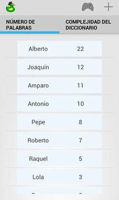
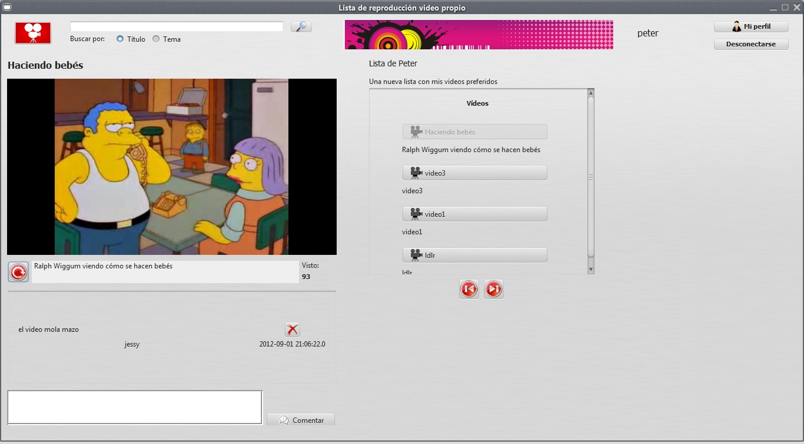
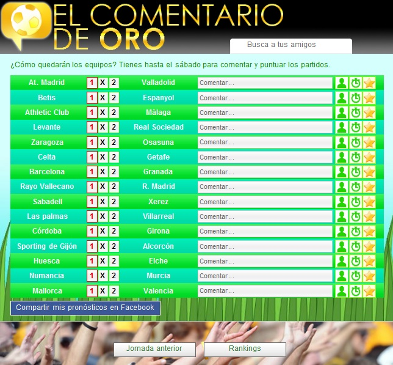

Ingeniero en informática, de 25 años. Me titulé en Universidad de Almería.
He desarrollado aplicaciones Android, Java, Spring, Javascript y PHP. En mi proyecto final de carrera investigué sobre aplicaciones basadas en geoposicionamiento y pasarelas de pago.
Escríbeme a jonasur@gmail.com,
lee mi blog: jonasurbano.wordpress.com.
Descarga mi CV para imprimir
En los últimos 6 meses he trabajado con un compañero en el encargo de una aplicación móvil para Android conectada a un servidor Java con Spring. La seguridad era un requisito primordial por lo que aplicamos cifrado en la conexión con SSL, en el dispositivo móvil y en la base de datos. Para gestionar el proyecto usamos JIRA Agile conectado con Jenkins que descargaba y ejecutaba la suite de tests a medida que ampliábamos la base de código.
A principios de 2014 comenzamos a desarrollar Ducktionary, un juego para Android utilizando las librerías más punteras para desarrollar una aplicación modular, desacoplada y fácilmente testeable. El servidor desarrollado con Spring y respaldado con una base de datos con MongoDB se comunica con los dispositivos a través de Google Cloud Messaging.
En junio de 2013 comencé mi proyecto final de carrera en el que investigué sobre la importancia de la información geolocalizada y las distintas pasarelas de pagos para integrar en aplicaciones Android. Desarrollé una aplicación de compra y venta de servicios geolocalizados a través de diferentes pasarelas de pago como Paypal o Coinbase integradas en la aplicación.
En 2012 desarrollamos una aplicación Java para escritorio llamada MyTube utilizando Swing desde la que se puede subir vídeos a la plataforma y comentarlos. En la aplicación integramos la librería de reproducción VLC.
El mismo verano de 2012 desarrollé un juego para la plataforma de aplicaciones de Facebook llamado El comentario de oro. En el juego se comentaban los partidos de las jornadas de la LFP y otros usuarios podían discutir y valorar los comentarios. Para la aplicación usé PHP, el framework de persistencia Doctrine, MySql, jQuery y Javascript.
Escribo un blog sobre desarrollo de software y tecnología. Visítalo, quizás te pueda interesar.
Algunos artículos que he escrito:
Escríbeme a jonasur@gmail.com y
Descarga mi CV para imprimir